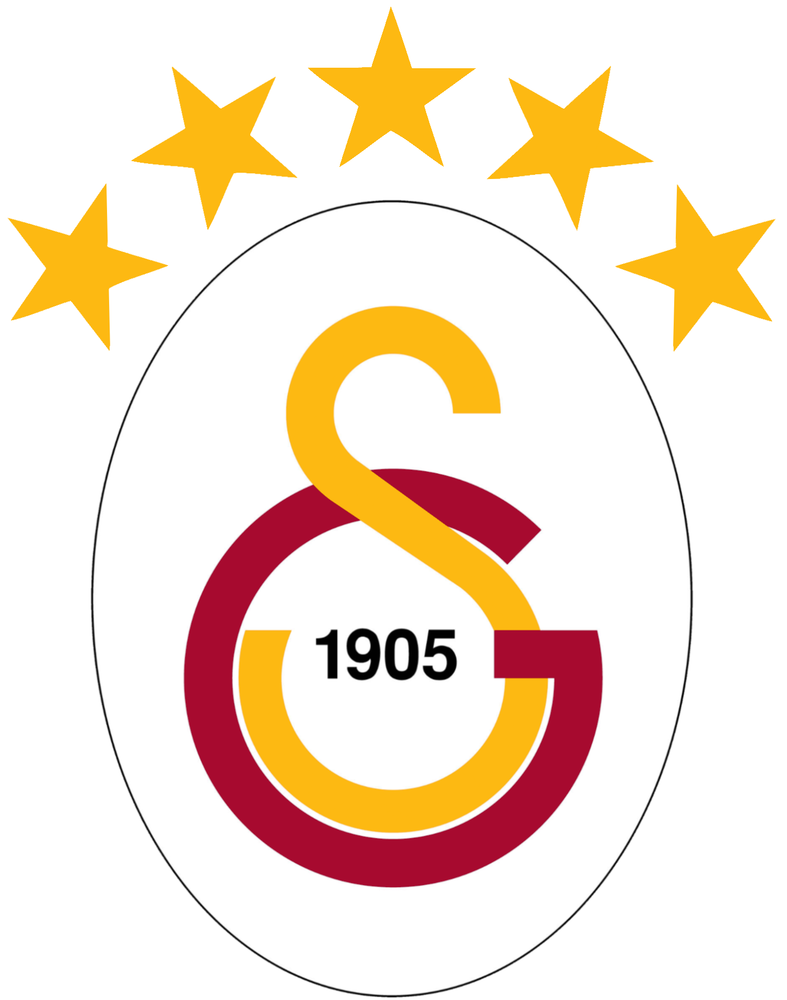
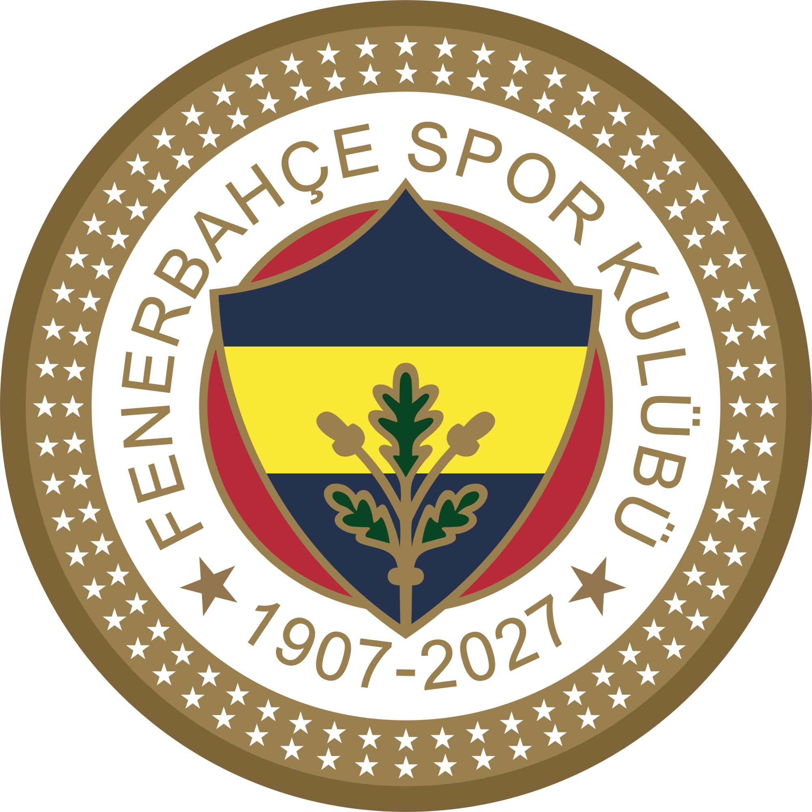
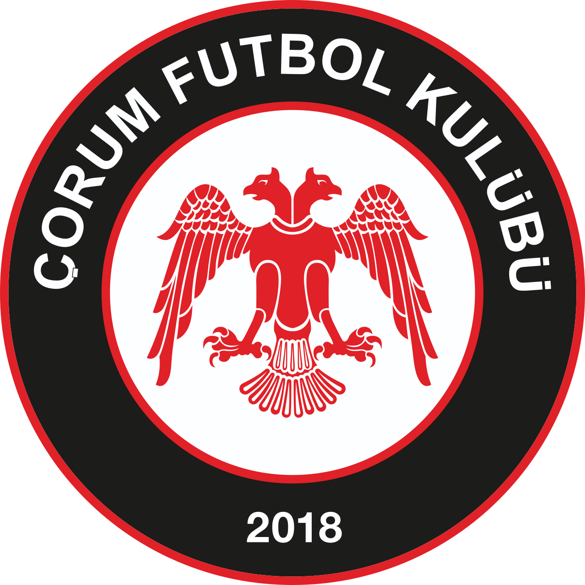
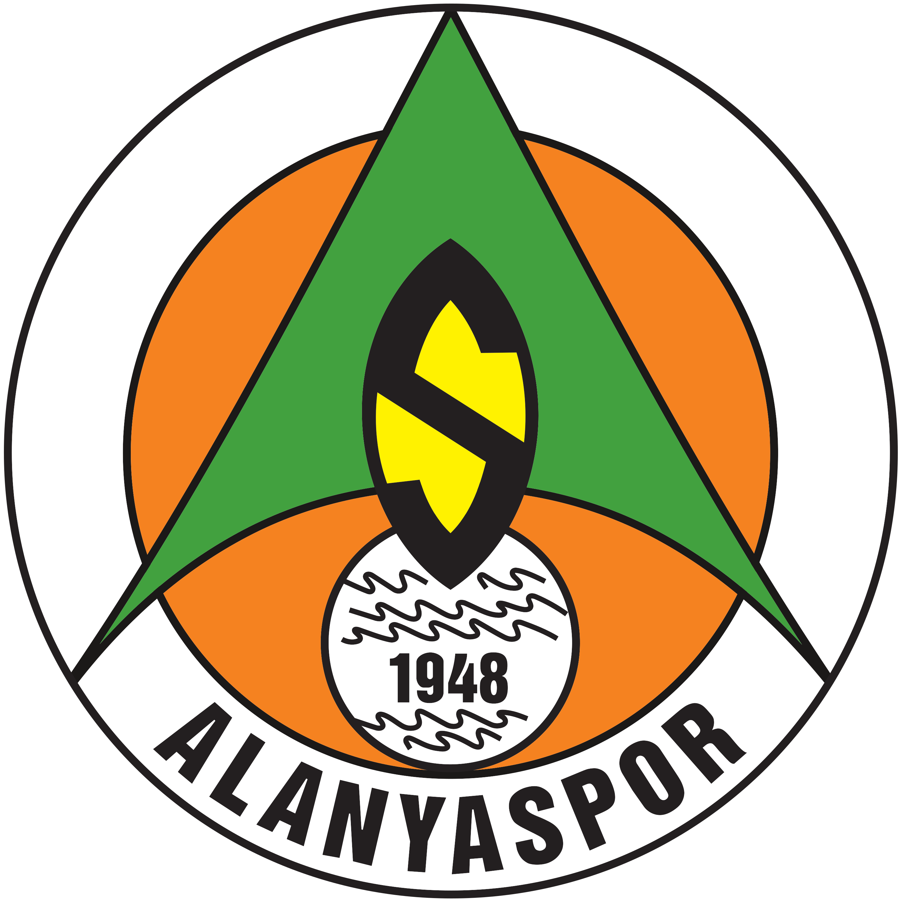
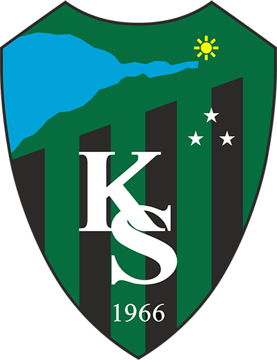
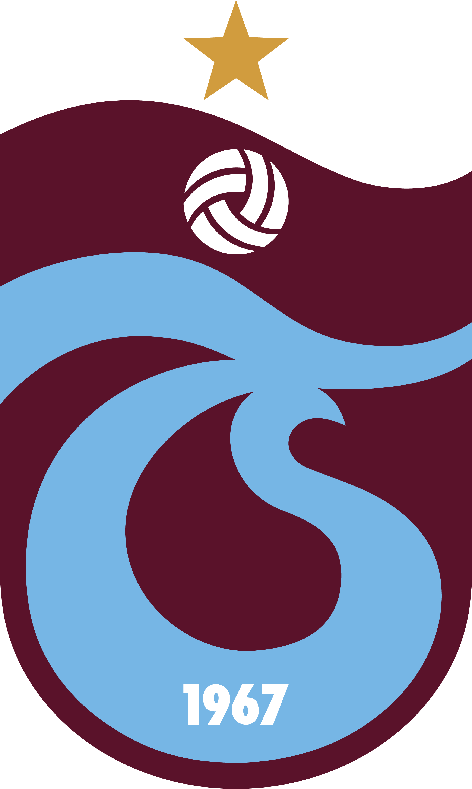
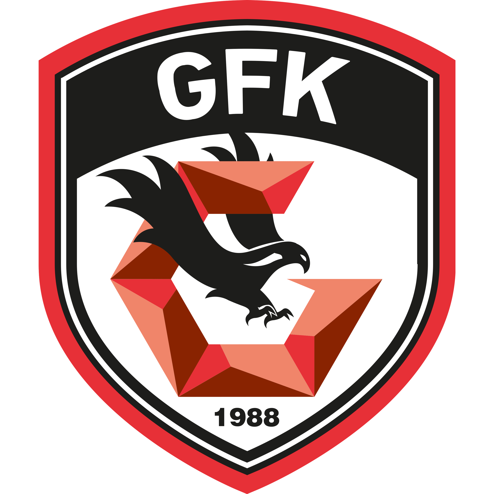
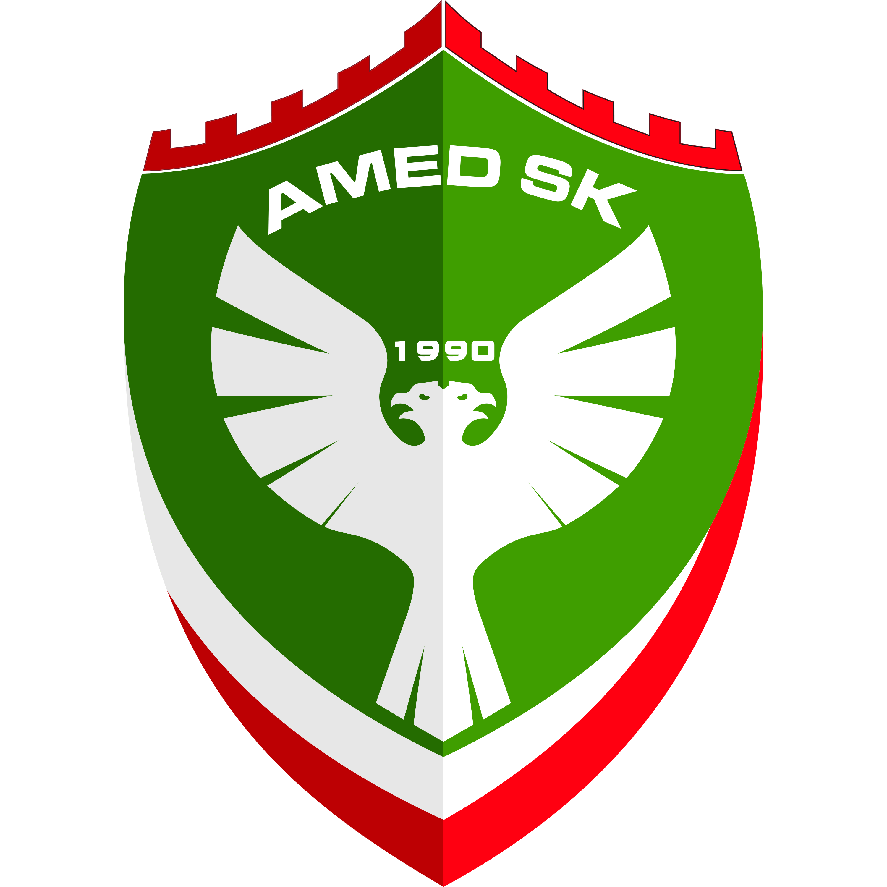
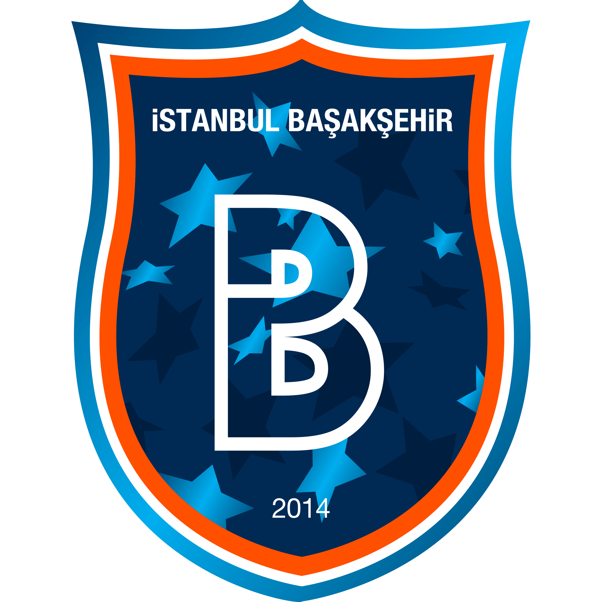

Fenerbahçe - Konyaspor
Çorum FK - Kasımpaşa
Alanyaspor - Beşiktaş| # | TAKIM | O | G | B | M | A | Y | AV | P |
|---|---|---|---|---|---|---|---|---|---|
| 1 | Galatasaray | 3 | 2 | 1 | 0 | 9 | 4 | +5 | 7 |
| 2 | Gençlerbirliği | 3 | 2 | 1 | 0 | 4 | 2 | +2 | 7 |
| 3 |  Kocaelispor |
3 | 2 | 0 | 1 | 4 | 3 | +1 | 6 |
| 4 | Ç. Rizespor | 3 | 2 | 0 | 1 | 3 | 3 | 0 | 6 |
| 5 | Alanyaspor | 2 | 1 | 1 | 0 | 4 | 1 | +3 | 4 |
| 6 | Samsunspor | 2 | 1 | 1 | 0 | 5 | 3 | +2 | 4 |
| 7 |  Trabzonspor |
2 | 1 | 1 | 0 | 3 | 2 | +1 | 4 |
| 8 |  Gaziantep FK |
3 | 1 | 1 | 1 | 3 | 3 | 0 | 4 |
| 9 |  Amed SK |
2 | 1 | 0 | 1 | 3 | 2 | +1 | 3 |
| 10 |  Başakşehir |
2 | 1 | 0 | 1 | 3 | 2 | +1 | 3 |
| 11 | Fenerbahçe | 2 | 1 | 0 | 1 | 4 | 4 | 0 | 3 |
| 12 | Beşiktaş | 2 | 1 | 0 | 1 | 1 | 3 | -2 | 3 |
| 13 | Çorum FK | 2 | 0 | 2 | 0 | 3 | 3 | 0 | 2 |
| 14 | Kasımpaşa | 2 | 0 | 2 | 0 | 2 | 2 | 0 | 2 |
| 15 | Göztepe | 3 | 0 | 1 | 2 | 5 | 7 | -2 | 1 |
| 16 | Erzurumspor FK | 3 | 0 | 1 | 2 | 1 | 8 | -7 | 1 |
| 17 | Eyüpspor | 2 | 0 | 0 | 2 | 0 | 2 | -2 | 0 |
| 18 | Konyaspor | 3 | 0 | 0 | 3 | 3 | 7 | -4 | 0 |